36 states · 117 original captures · desktop 1440×900 / mobile 390×844 / narrow 360×844. Approved for completeness and correctness on 2026-10-04.
Images preserve native exports with their dimensions labeled. Full-page height varies. Local mock API; no real payments. Read the full environment, journeys, reproduction steps, limitations and review gate, or the original-file manifest. Click any paired image for its native size.
Discovery audit: ZVY-53 local report · published audit. Eight findings; proposed changes await screen review.
Route: /
Purpose: Discover the featured book and routes to the shop, events, author and contacts.
Understand: Understand which book is featured and where to browse the full catalog.
Setup: normal; full-page homepage supplement.
Next: Open the featured book or choose Магазин; mobile navigation uses the same visible links.
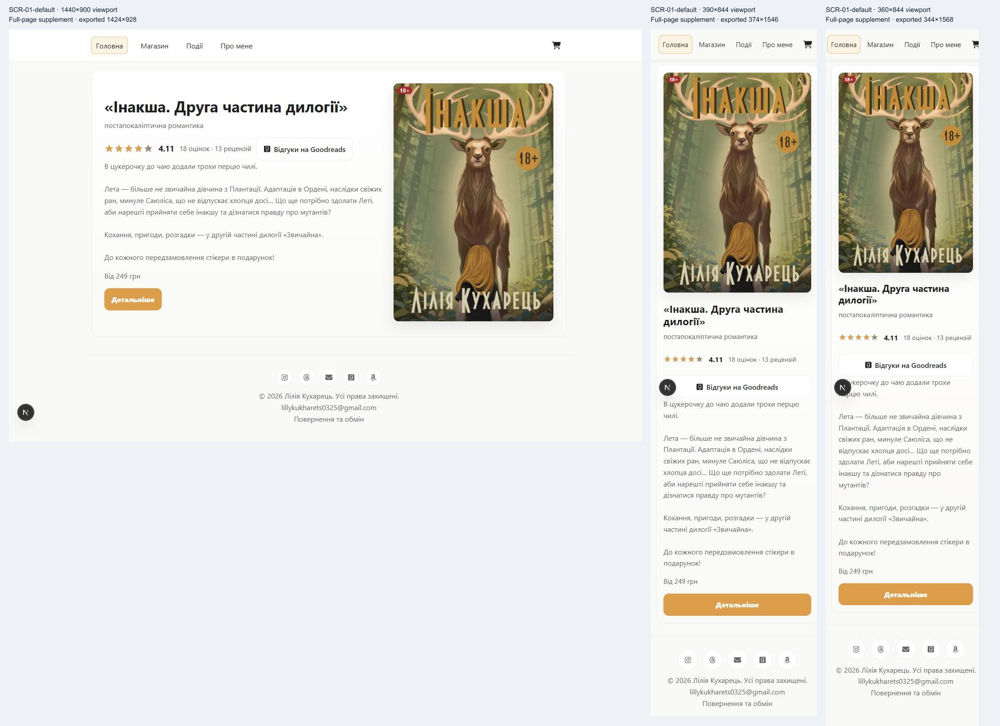
Route: /
Purpose: Show the surviving home shell when the API returns no products.
Understand: No featured product is offered in this controlled state; contacts and navigation remain.
Setup: empty; API catalog=[]; invalidate cache; fresh home; no featured product, contacts remain.
Next: Choose Магазин or a contact link.
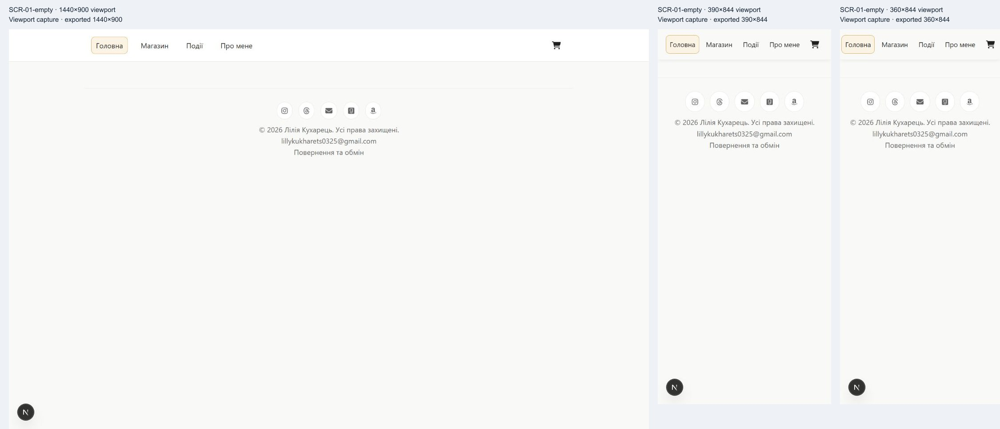
Route: /books
Purpose: Compare the six active books, bundle and merchandise entries.
Understand: Read product identity, starting price, rating/availability cues before choosing an item.
Setup: normal; six active products; full-page catalog supplement.
Next: Open a product card; navigation remains available.
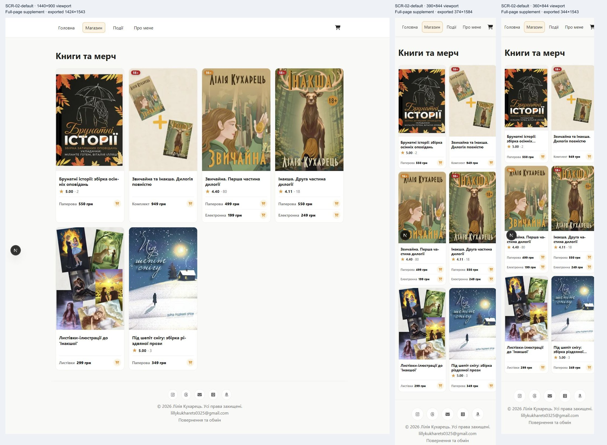
Route: /books
Purpose: Explain that no products are currently offered.
Understand: This is an empty catalog, with no search or filter applied.
Setup: empty; API catalog=[]; invalidate caches; fresh /books load; catalog empty message.
Next: Use navigation or contact the author.
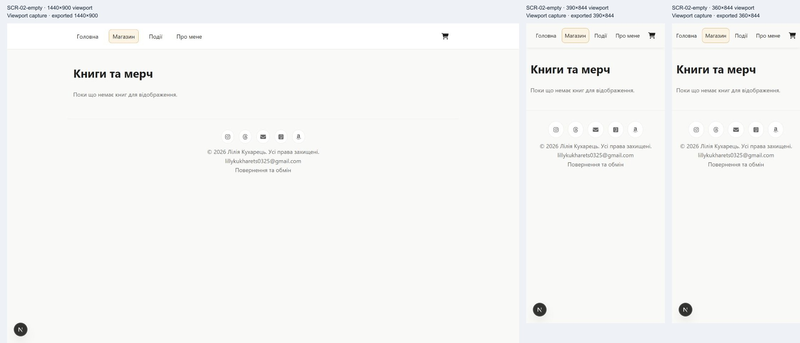
Route: /books/zvychajna
Purpose: Evaluate Звичайна and choose its physical edition.
Understand: Paper is selected at 499 UAH; description, rating, excerpt and specifications support the purchase.
Setup: Same state; full-page view includes purchase controls and specifications.
Next: Read the excerpt, switch format, buy or add to cart.
Route: /books/zvychajna
Purpose: Show the alternative edition of the same book.
Understand: Electronic is selected at 199 UAH; this choice determines the cart item and delivery requirements.
Setup: normal; /books/zvychajna; digital selected, 199 UAH.
Next: Buy or add this edition to cart, or switch back to paper.
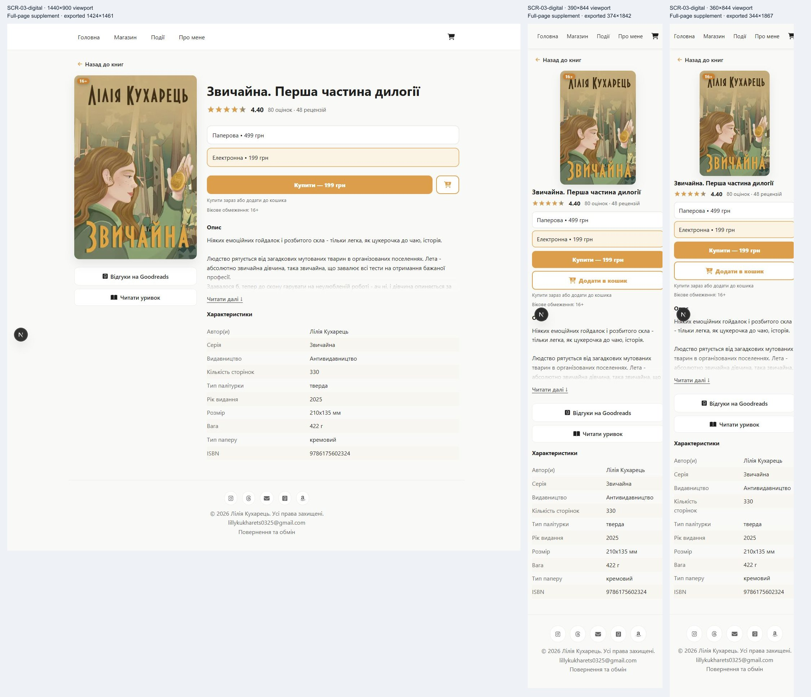
Route: /books/zvychajna
Purpose: Let the customer sample the book before buying.
Understand: The reading panel has its own scroll and close control; the product remains underneath.
Setup: normal; /books/zvychajna → Читати уривок; initial dialog scroll.
Next: Read/scroll the excerpt and close it to continue selection.
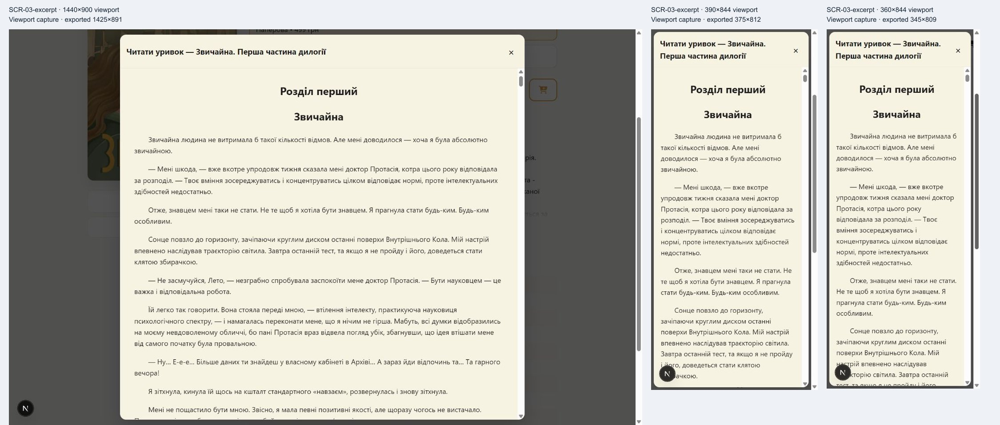
Route: /books/pid_shepit_snihu
Purpose: Evaluate Під шепіт снігу while ordinary availability is false and preorder is allowed.
Understand: The paper edition costs 349 UAH and the primary action is Передзамовити.
Setup: normal; /books/pid_shepit_snihu; default selection and all product content.
Next: Preorder/add the selected edition or return to the catalog.
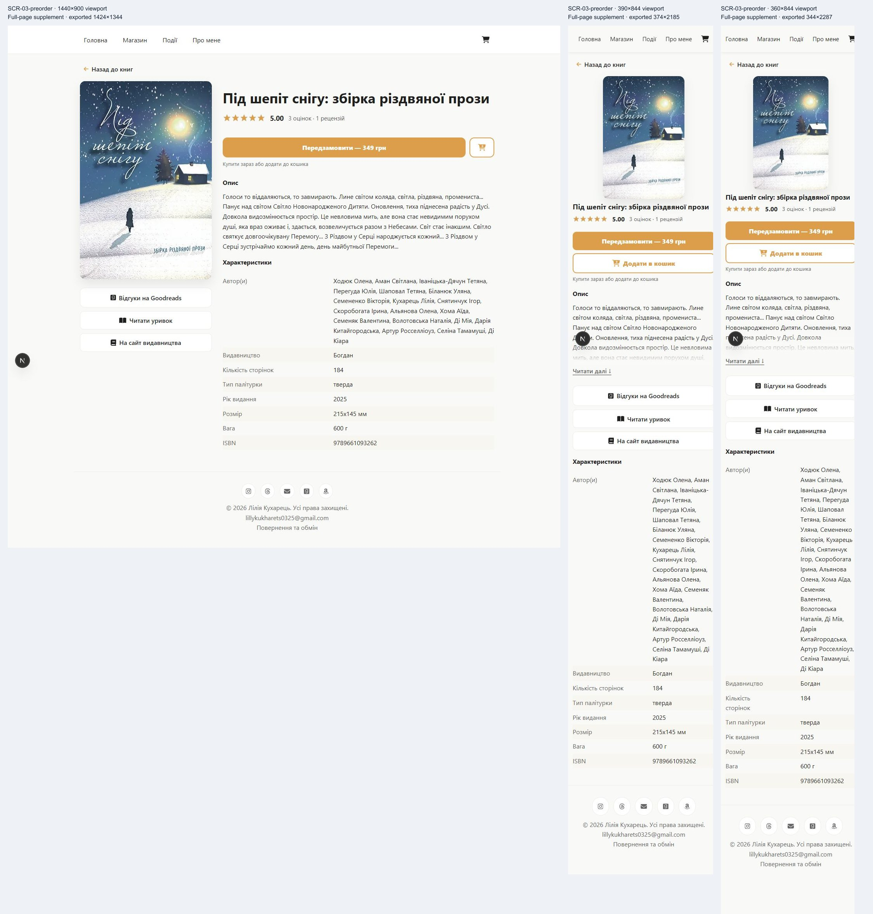
Route: /books/inaksha
Purpose: Evaluate Інакша, including its image gallery and external audio excerpt.
Understand: The initial paper edition costs 550 UAH; electronic costs 249 UAH. External Goodreads and YouTube destinations are separate from checkout.
Setup: normal; /books/inaksha; default selection and all product content.
Next: Choose format, read/listen to a sample, buy or add to cart.
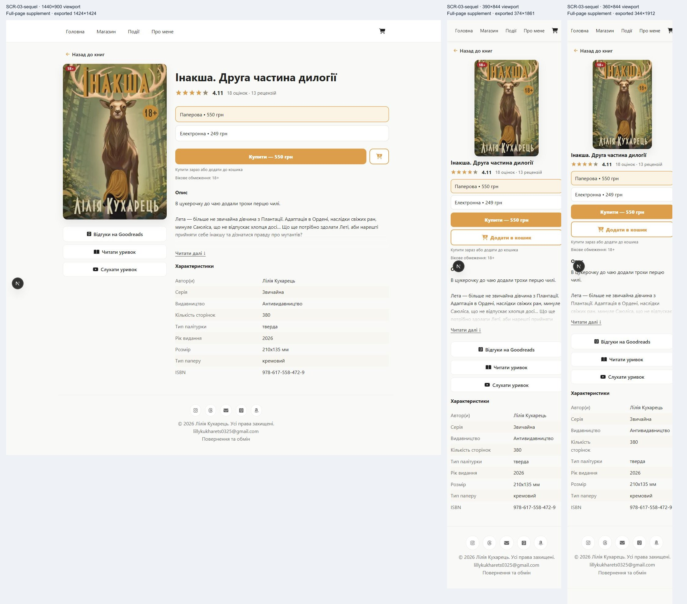
Route: /books/brunette-stories
Purpose: Evaluate Брунатні історії as a separate book.
Understand: Its selected paper edition costs 550 UAH; specifications and description differ from the novels.
Setup: normal; /books/brunette-stories; default selection and all product content.
Next: Buy/add this item or return to the catalog.
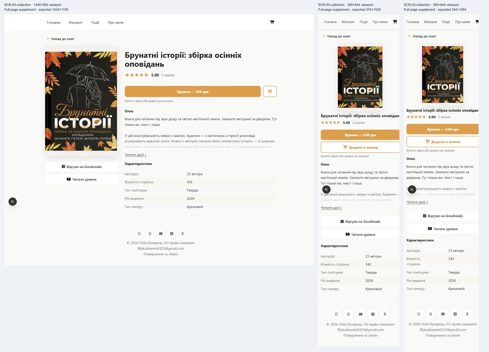
Route: /books/zvychajna-and-inaksha
Purpose: Present Звичайна та Інакша together.
Understand: The selected комплект costs 949 UAH and is one catalog/cart item.
Setup: normal; /books/zvychajna-and-inaksha; default selection and all product content.
Next: Buy/add the bundle or compare individual editions.
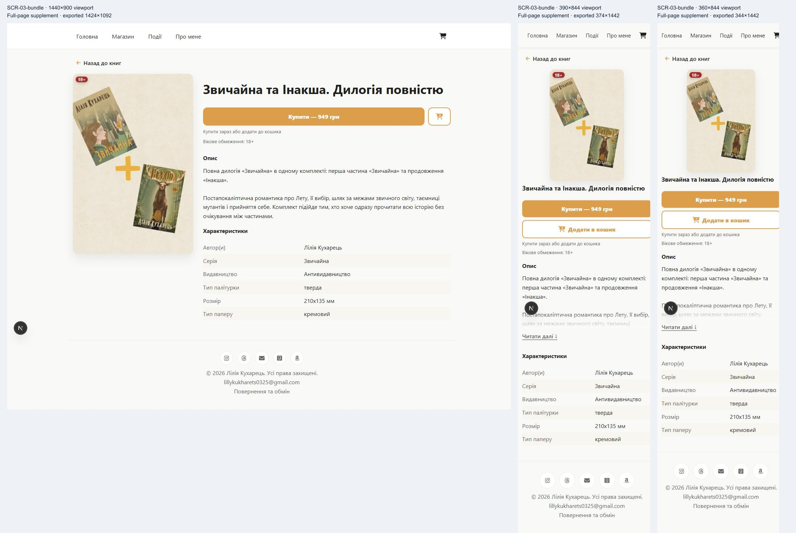
Route: /books/inaksha-art
Purpose: Present the physical illustration set linked to Інакша.
Understand: This is merchandise at 299 UAH, with its own imagery and dimensions.
Setup: normal; /books/inaksha-art; default selection and all product content.
Next: Buy/add postcards or return to a book.
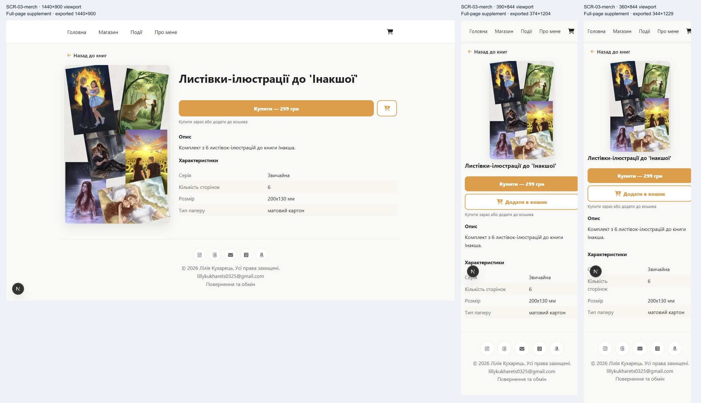
Route: /books/inaksha
Purpose: Offer postcards after buying the paper sequel.
Understand: The book has already been added. The suggestion is optional and has add, details and close controls.
Setup: Normal; empty browser cart; buy paper Інакша (550 UAH). Optional postcards suggestion opens after book is added; dismiss/add/details available.
Next: Add postcards, open their details, or dismiss and proceed with the book.
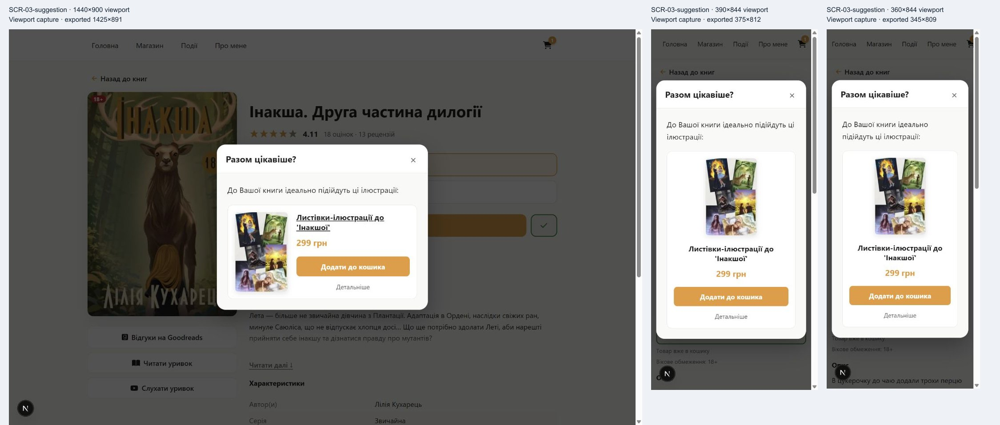
Route: /books
Purpose: Show the cart with no items.
Understand: There is no order to submit; close returns to the underlying catalog.
Setup: /books → cart; remove all items; empty cart.
Next: Close the cart and choose a product.
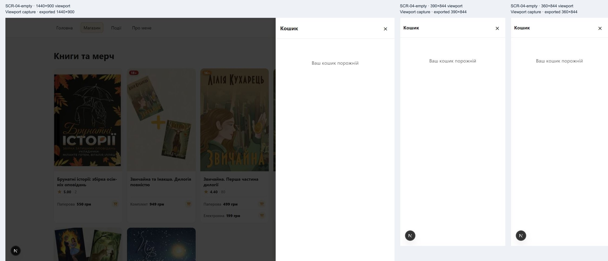
Route: /books/zvychajna
Purpose: Review one paper Звичайна.
Understand: Quantity is one, unit/total price is 499 UAH; quantity, removal and promo controls are available.
Setup: normal; paper Звичайна quantity 1, 499 UAH; Купити opens cart.
Next: Change quantity, remove, apply a promo or open checkout.
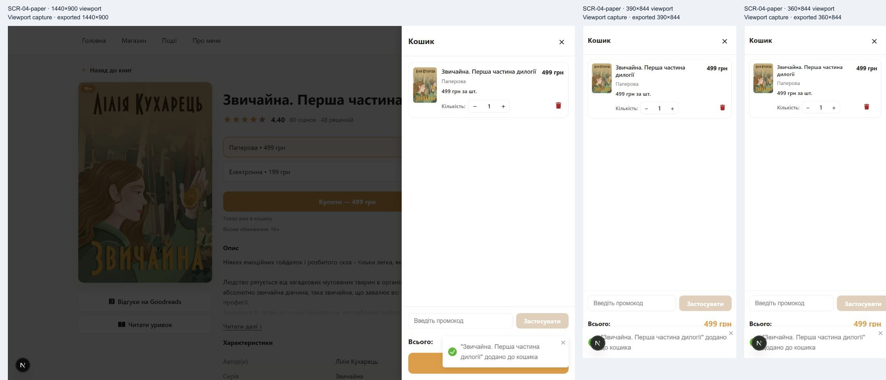
Route: /books
Purpose: Review the sequel after the optional suggestion was dismissed.
Understand: One paper Інакша costs 550 UAH; postcards are not in this cart.
Setup: One paper Інакша, 550 UAH; cart opened after suggestion.
Next: Adjust the item or open checkout.
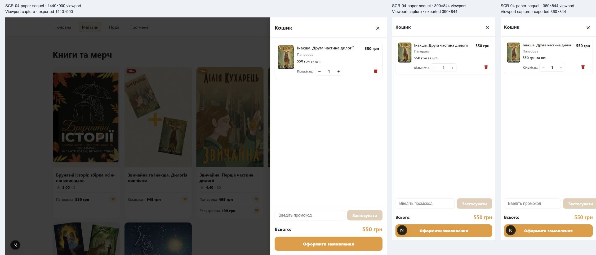
Route: /books
Purpose: Review one electronic Звичайна.
Understand: Price is 199 UAH and physical quantity controls are absent.
Setup: normal; digital Звичайна only; quantity 1; 199 UAH.
Next: Remove, apply a promo or open the digital checkout.
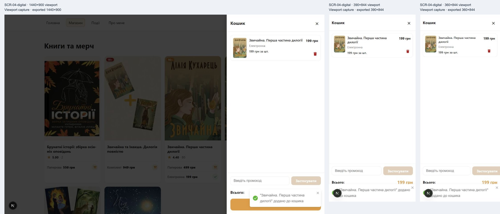
Route: /books
Purpose: Review multiple editions and a changed physical quantity.
Understand: Digital quantity one plus paper quantity two totals 1197 UAH.
Setup: Digital Звичайна quantity 1 and paper quantity 2; total 1197 UAH.
Next: Adjust paper quantity, remove an item or proceed with mixed checkout.
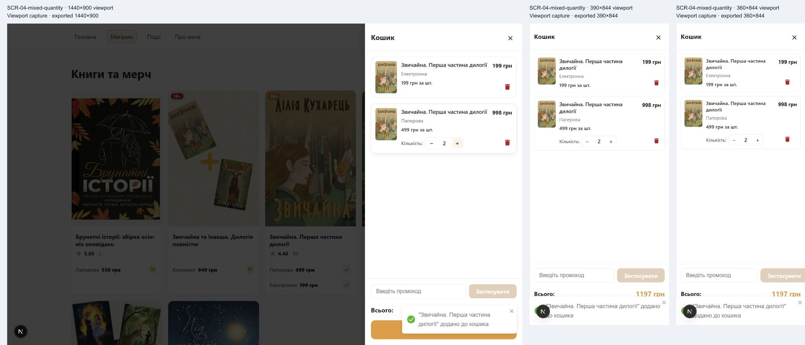
Route: /books
Purpose: Show the resulting cart after removing the digital item.
Understand: Two paper copies remain, totalling 998 UAH.
Setup: Remove digital item from mixed cart; two paper copies, 998 UAH.
Next: Continue adjusting the remaining item or open physical checkout.
Route: /books/zvychajna
Purpose: Explain failure to apply INVALID.
Understand: An error toast appears and the displayed total remains 499 UAH.
Setup: INVALID promo rejected; error toast; total stays 499 UAH.
Next: Correct/retry the code or continue without a discount.
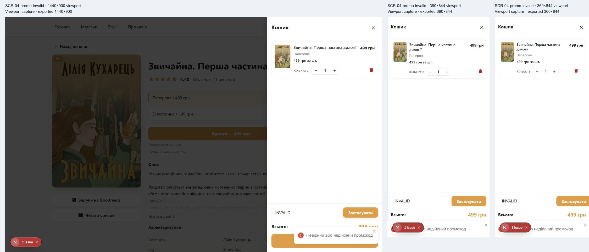
Route: /books/zvychajna
Purpose: Show the accepted controlled BASELINE10 code.
Understand: The API double provides a global 10% promo. Current UI displays a 50 UAH discount and 449 UAH total; these are display values, not a payment reconciliation assertion.
Setup: Mock BASELINE10, 10%; displayed discount 50 UAH, total 449 UAH.
Next: Remove/change the promo or proceed to checkout.
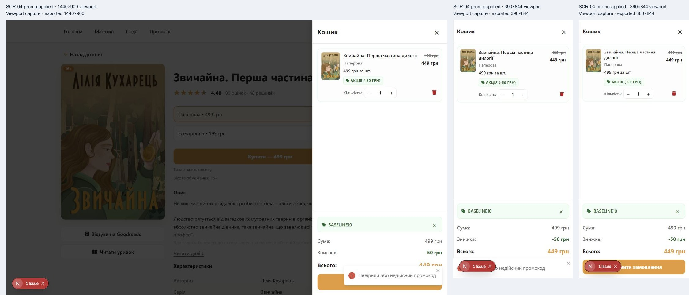
Route: /books/zvychajna
Purpose: Collect customer and shipping details while reviewing the discounted order.
Understand: Names, email, phone and Nova Post branch are required; comment is optional. The form and order summary scroll within the dialog.
Setup: Paper plus BASELINE10 → blank physical checkout.
Next: Fill required fields, select a branch and confirm the order.
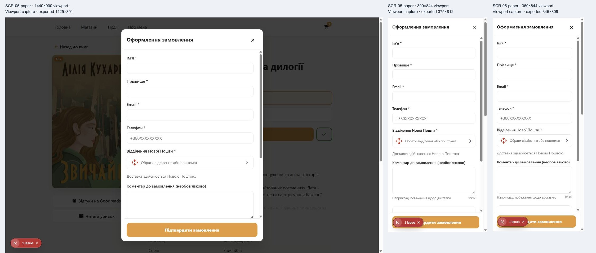
Route: /books
Purpose: Collect the information needed for digital delivery.
Understand: Only names and email are required; comment is optional. Phone and shipping fields are absent.
Setup: Digital-only checkout; only names/email and optional note; no delivery or phone fields.
Next: Complete the fields and confirm the order.
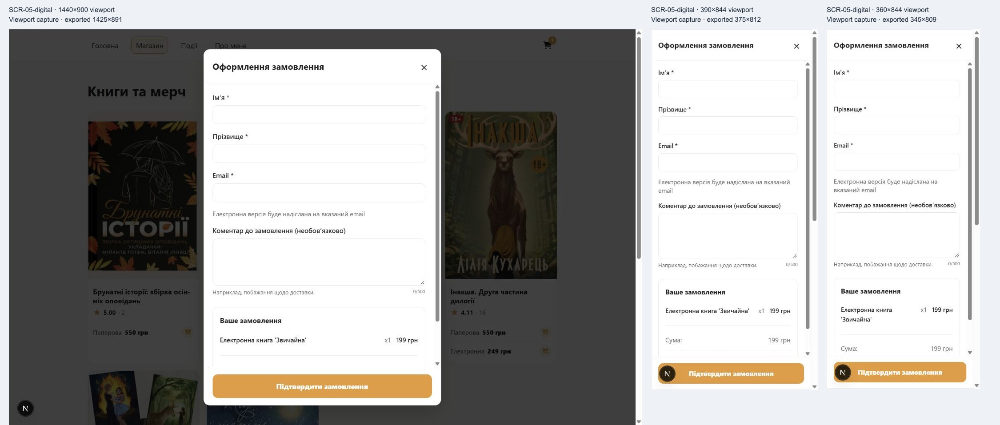
Route: /books/inaksha
Purpose: Expose the lower form and order review at each size.
Understand: This independent sample contains one paper Інакша at 550 UAH, no promo and blank customer fields. It is not the discounted Звичайна scenario.
Setup: Normal; buy paper Інакша 550 UAH; dismiss suggestion; open cart then checkout; scroll inside checkout to order summary. No promo, blank customer.
Next: Review item/total, return to fields if necessary and confirm when complete.
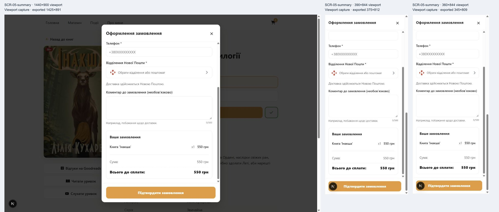
Route: /books/zvychajna
Purpose: Guide correction after submitting a blank physical form.
Understand: Five required-field errors appear; no invoice request is made by this invalid submission.
Setup: Blank physical checkout submit; five required-field errors; no invoice request made.
Next: Correct the highlighted fields and choose a delivery branch.
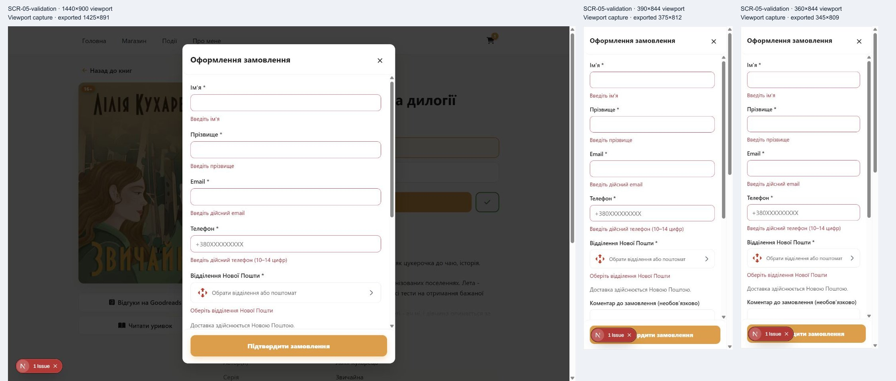
Route: /books/zvychajna
Purpose: Choose a shipping destination from the embedded external widget.
Understand: The widget initially lists Kyiv branches. No geolocation permission was granted; content is live and may change.
Setup: External Nova Post picker; default Kyiv; no geolocation permission granted.
Next: Choose a branch or close the picker; then continue checkout.
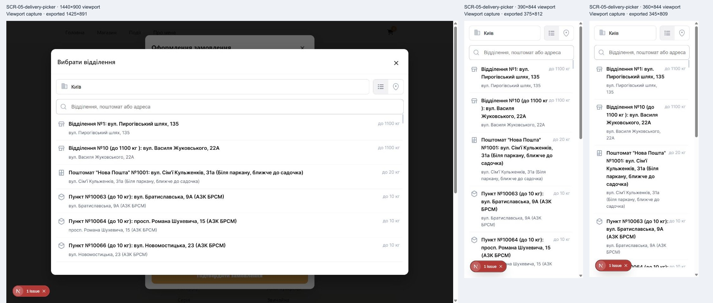
Route: /books/zvychajna
Purpose: Keep a completed form available after the controlled local API returns 500.
Understand: An error toast appears and the synthetic customer, selected branch and note remain; no real order or payment was created.
Setup: invoice-error; synthetic customer, selected public Kyiv branch №1, 44-character note; local API returns 500; error toast and form retained for retry.
Next: Retry or close/edit the form.
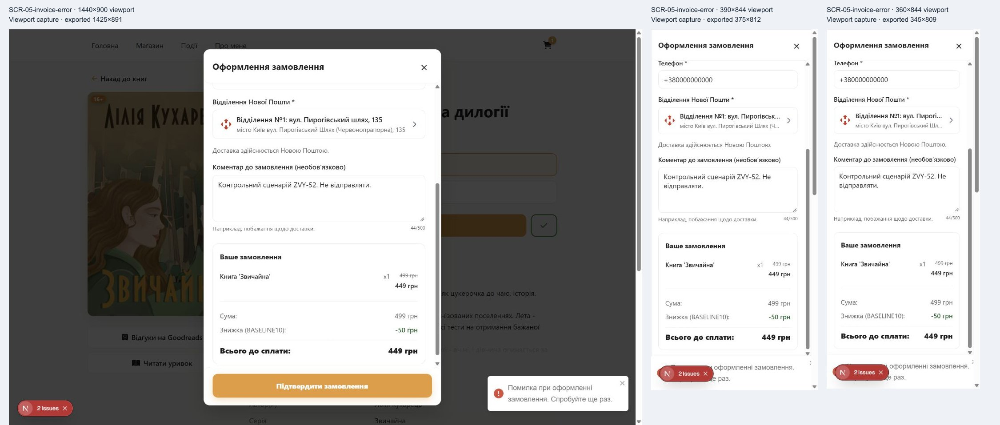
Route: /books/zvychajna
Purpose: Communicate that confirmation is in progress.
Understand: The controlled API waits 15 seconds; Обробка замовлення... replaces the button label and submission is disabled.
Setup: invoice-loading; retry valid physical form; API waits 15s; button shows Обробка замовлення... and is disabled.
Next: Wait for the request result; this capture does not prove provider acceptance.
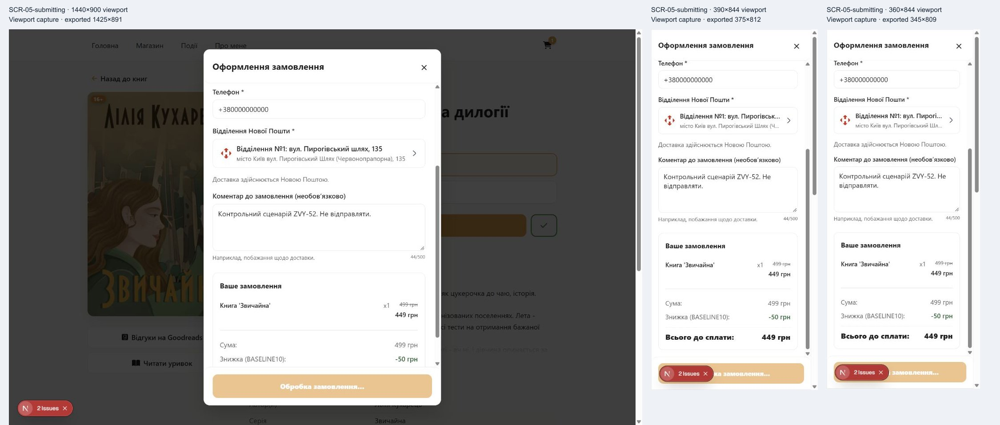
Route: /
Purpose: Record the frontend response to a successful local mock invoice response.
Understand: The mock redirect returns home, closes checkout and clears the cart. There is no payment confirmation or receipt on this screen.
Setup: Local mock invoice acceptance redirects to /; checkout closes and cart clears; no payment confirmation. Not verified Monobank success.
Next: Use home navigation; real payment outcomes require separate verification.
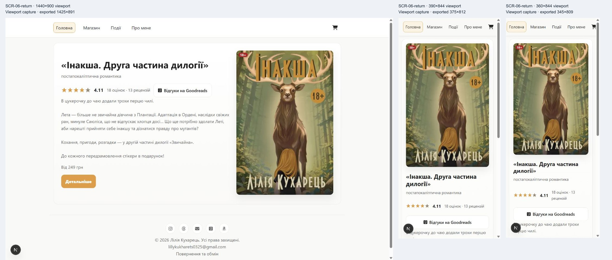
Route: /events
Purpose: Discover author appearances and their external detail links.
Understand: All three entries are in the past group on the capture date; there is no dedicated event-detail route.
Setup: Normal catalog; /events; all events are grouped as past at capture date; first carousel images.
Next: Open an external event link or return to the shop.
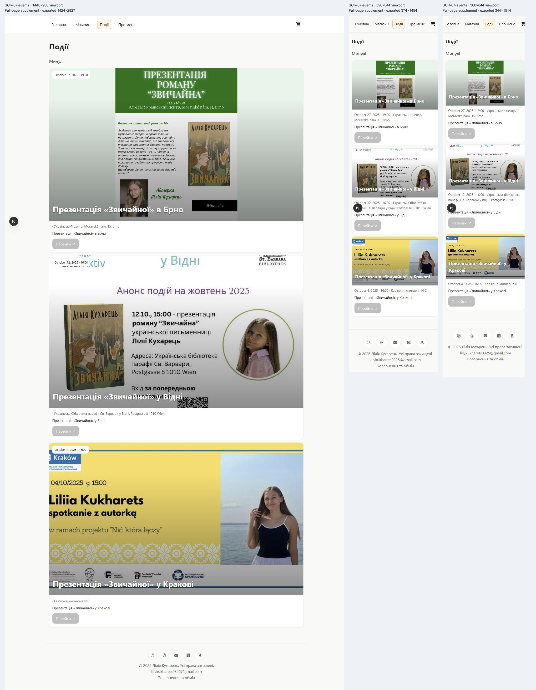
Route: /about
Purpose: Introduce the author and offer contact paths.
Understand: Read the biography and identify contact/social links in the footer.
Setup: /about; author introduction and contact links; no order state.
Next: Browse books, events or an external contact destination.
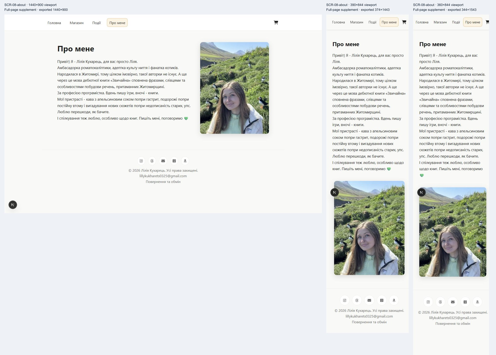
Route: /return-policy
Purpose: Explain the storefront's published return/exchange process.
Understand: Read conditions, steps and contact details before requesting assistance; this is documentation of displayed content, not legal verification.
Setup: /return-policy; returns/exchange content linked from footer.
Next: Contact the author or return to browsing.
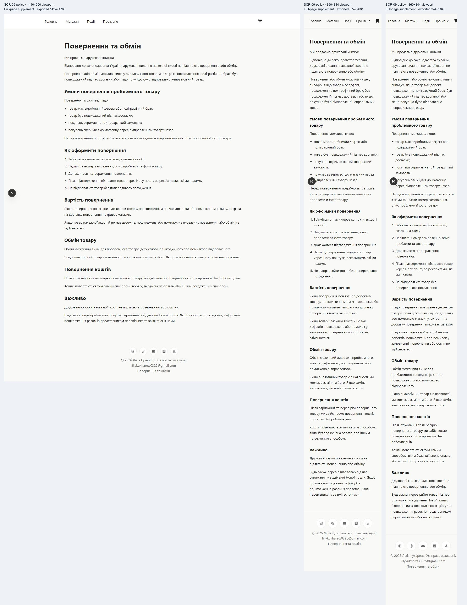
Route: /books/inaksha
Purpose: Provide recovery after a controlled product API 500.
Understand: The branded Не вдалося завантажити сторінку screen offers retry and catalog navigation.
Setup: product-error; invalidate /books/inaksha cache then reload; API returns 500; branded recovery screen.
Next: Retry after recovery or return to the catalog.
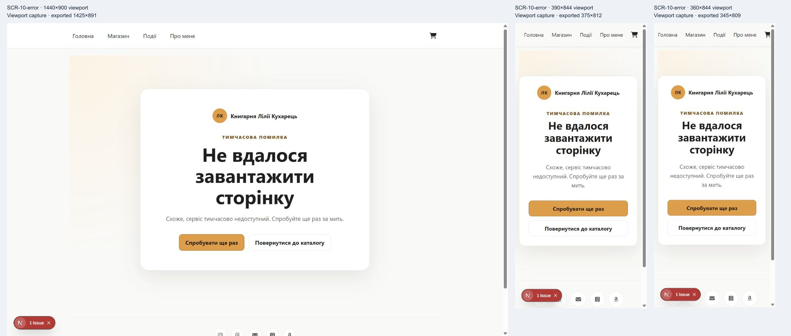
Route: /books/inaksha
Purpose: Show the product route recovering without a new URL.
Understand: After restoring normal data and invalidating the cache, retry displays Інакша again.
Setup: Reset API normal, invalidate cache, click Спробувати ще раз; same product route recovers.
Next: Resume selection or return to the catalog.
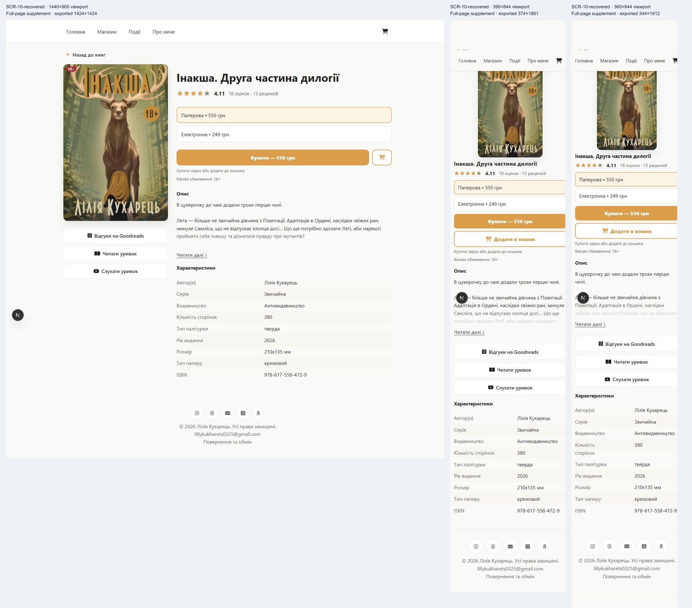
Route: /books/does-not-exist
Purpose: Explain a nonexistent product URL.
Understand: The branded Цю сторінку не знайдено screen has a catalog action.
Setup: normal; /books/does-not-exist; missing product; branded 404 with catalog action.
Next: Return to the catalog and choose an existing product.
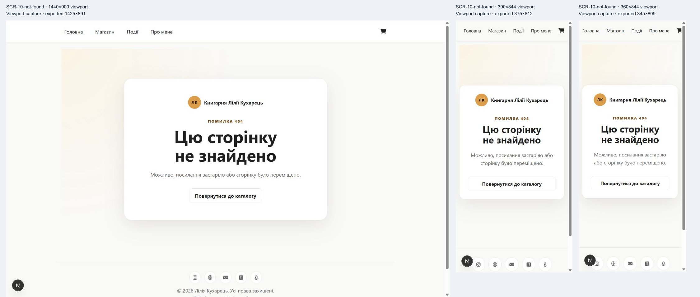